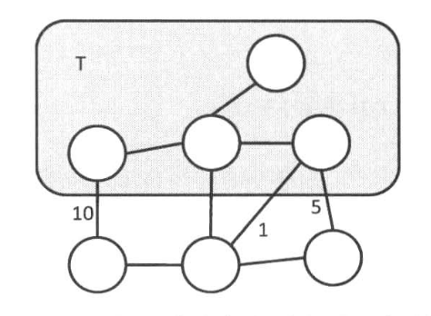
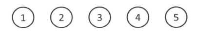
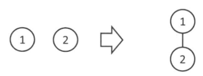
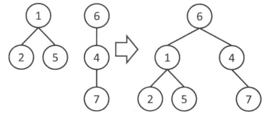
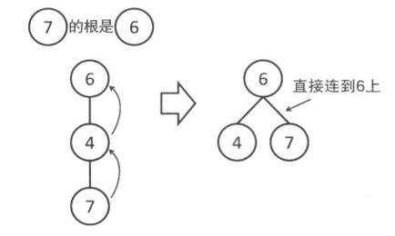
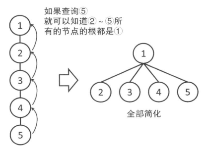

图论—最小生成树
和最短路径相似，甚至比它更加不注重证明过程，知道最小生成树的概念以及如何去求就已经足够了，将不再详细注明证明过程。实话实说这个证明看一次理解一次，过段时间又会忘掉，并且重点就是每次重新理解最小生成树算法的正确性还得花费一定的时间，并不是说我能够用一种很形象的理解一下子就能够回想起来。
概念
生成子图：
对一张图 \(G = (V, E)\)，若存在另一张图
\(H = (V', E')\) 满足 \(V' \subseteq V\) 且 \(E' \subseteq E\)，则称 \(H\) 是 \(G\) 的 子图
(subgraph)，记作 \(H \subseteq
G\)。
若 \(H \subseteq G\) 满足 \(V' = V\)，则称 \(H\) 为 \(G\) 的 生成子图(spanning subgraph)
生成树：
一个连通无向图的生成子图，同时要求是树。也即在图的边集中选择\(n-1\)条，将所有顶点连通。(\(n\)个节点的树有\(n-1\)条边)
我们定义无向连通图的 最小生成树（Minimum Spanning Tree，MST）为边权和最小的生成树。
注意
只有连通图才有生成树，而对于非连通图，只存在生成森林。
Prim算法
首先，我们假设有一颗只包含一个顶点\(v\)的树\(T\)。然后贪心地选取\(T\)和其他顶点之间相连地最小权值的边，并把它加到\(T\)中。不断进行这个操作，就可以得到一颗生成树了。如下图所示：

下面以洛谷-P3366 【模板】最小生成树为例说明：
一种是原始的prim算法
#include <cstdio> #include <iostream> #include <string> #include <cstring> #include <algorithm> #include <queue> #define inf 0x3f3f3f3f using namespace std; const int maxn = 4e5+100; int n, m; int head[maxn], cnt; int tot, dis[maxn], ans; bool vis[maxn]; struct edge{ int to, val, nxt; }e[maxn]; void add(int u, int v, int w){ e[++cnt].to = v; e[cnt].val = w; e[cnt].nxt = head[u]; head[u] = cnt; } //原版 void prim1(){ for(int i = 1; i <= n; i++) dis[i] = inf; dis[1] = 0, dis[0] = inf; while(true){ int u = 0; //寻找距离生成树最小的顶点 for(int i = 1; i <= n; i++) if(!vis[i]&&dis[i]<dis[u]) u = i; if(!u) break; //所有顶点均已加入生成树 tot++, vis[u] = 1, ans += dis[u]; //更新dis数组，即生成树和其他顶点间的距离 for(int i = head[u]; i; i = e[i].nxt){ int v = e[i].to, w = e[i].val; if(dis[v]>w) dis[v] = w; } } } int main(){ cin >> n >> m; for(int i = 1; i <= m; i++){ int u, v, w; cin >> u >> v >> w; add(u, v, w), add(v, u, w); } prim1(); if(tot==n) cout << ans; else puts("orz"); }另一种是用堆优化每次取出生成树距离最近的点，其中对于
if(vis[u]) continue的解释为：节点已经加入生成树则忽略，如下图所示

struct node{ int pos, dis; friend bool operator <(node a, node b){ return a.dis > b.dis; } }; //堆优化 void prim2(){ priority_queue<node> que; //用于寻找与生成树距离最近的点 for(int i = 1; i <= n; i++) dis[i] = inf; dis[1] = 0; que.push({1, 0}); while(!que.empty()){ node now = que.top(); que.pop(); int u = now.pos; if(vis[u]) continue; //若节点已经加入生成树则忽略 tot++, vis[u] = 1, ans += dis[u]; for(int i = head[u]; i; i = e[i].nxt){ int v = e[i].to, w = e[i].val; if(dis[v]>w) { dis[v] = w; que.push({v, w}); } } } }

Kruskal 算法
Kruskal 算法按照边的权值的顺序从小到大查看一遍，如果不产生圈，就把当前这条边加入到生成树中。
接下来我们介绍如何判断产生圈。假设现在要把连接顶点\(u\)和顶点\(v\)的边\(e\)加入生成树中，如果加入之前\(u\)和\(v\)不在同一个联通分量里，那么加入\(e\)也不会产生圈；反之，如果\(u\)和\(v\)在同一个联通分量里，那么一定会产生圈。可以使用并查集高效地判断是否属于同一个联通分量。
并查集
并查集就是维护了几个动态的集合。集合中的每一个元素都标记了一个父节点，同一个集合的代表是相同的。当一个元素的父节点就是他本身时，它就是该集合的代表。
初始时

合并
从一个组的根向另一个组的根连边，这样两颗树就变成了一棵树，也就把两个组合并为一个组了

查询
沿着树向上走就能查询到包含着这个元素的树的根是谁。若两个节点走到同一个根，代表属于同一个集合。

路径压缩
通过路径压缩，可以使得并查集更加高效，一旦向上到了一次根节点，就把这个点到父亲的边改为直接连向根

在此之上，不仅仅是所查询的节点，在查询过程中向上经过的所有节点，都改为直接连到根上。这样再次查询这些节点时，就可以很快知道根是谁了。

下面以为HDU-1232 畅通工程例说明其具体实现，细节见注释：
#include <cstdio>
using namespace std;
const int maxn = 1e3+100;
int n, m;
int fa[maxn];
//并查集寻找根节点（含路径压缩）
int find(int u){
if(u!=fa[u]) return fa[u] = find(fa[u]);
return u;
}
//合并
void unite(int u, int v){
u = find(u), v = find(v);
if(u!=v) fa[v] = u;
}
int main(){
while(~scanf("%d", &n)&&n){
scanf("%d", &m);
for(int i = 1; i <= n; i++) fa[i] = i;
for(int i = 1; i <= m; i++){
int u, v;
scanf("%d%d", &u, &v);
unite(u, v);
}
int cnt = 0;
//确定连通分量个数
for(int i = 1; i <= n; i++)
if(fa[i]==i) cnt++;
printf("%d\n", cnt-1);
}
}至此，对并查集有了基本的理解。接着我们可以用并查集维护Kruskal 算法中的联通分量：
#include <cstdio>
#include <cstring>
#include <iostream>
#include <algorithm>
using namespace std;
const int maxn = 5e3+100, maxm = 2e5+100;
int n, m;
int fa[maxn], cnt, ans;
struct edge{
int u, v, w;
}e[maxm];
bool cmp(edge a, edge b){
return a.w < b.w;
}
int find(int u){
if(u!=fa[u]) return fa[u] = find(fa[u]);
return u;
}
void kruskal(){
sort(e+1, e+1+m, cmp); //将边排序
for(int i = 1; i <= m; i++){
int u = find(e[i].u), v = find(e[i].v);
if(u==v) continue;
//将边加入生成树并统计答案
fa[v] = u;
cnt++, ans += e[i].w;
}
}
int main(){
cin >> n >> m;
for(int i = 1; i <= n; i++) fa[i] = i;
for(int i = 1; i <= m; i++)
cin >> e[i].u >> e[i].v >> e[i].w;
kruskal();
if(cnt==n-1) cout << ans;
else puts("orz");
} 总结
在稠密图中，原版的Prim算法复杂度较优，但在稀疏图中，堆优化的Prim以及Kruskal算法表现会更好。在应用时，我们可以根据实际情况选择最优的算法。